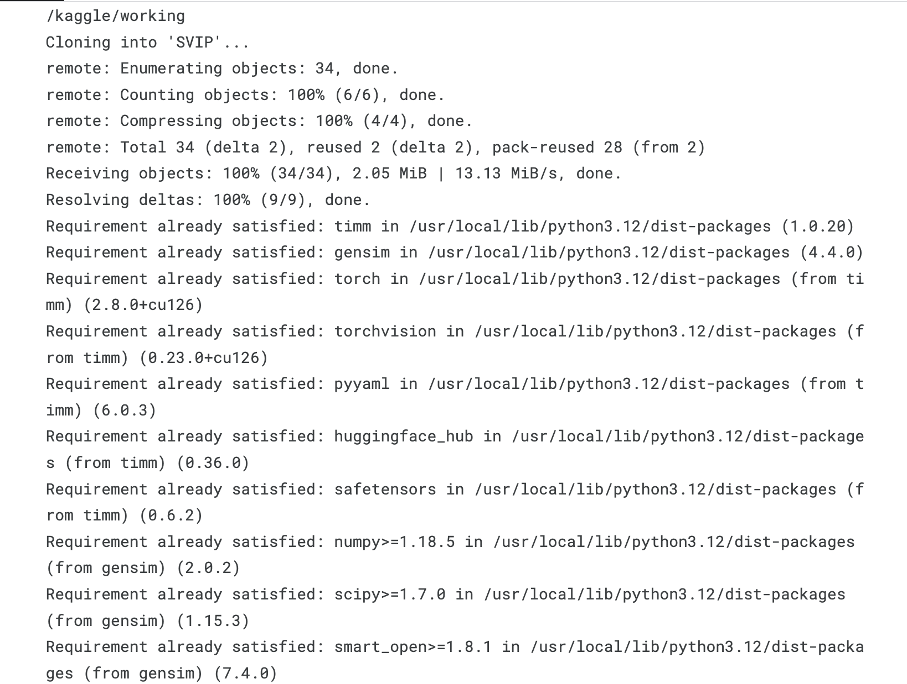
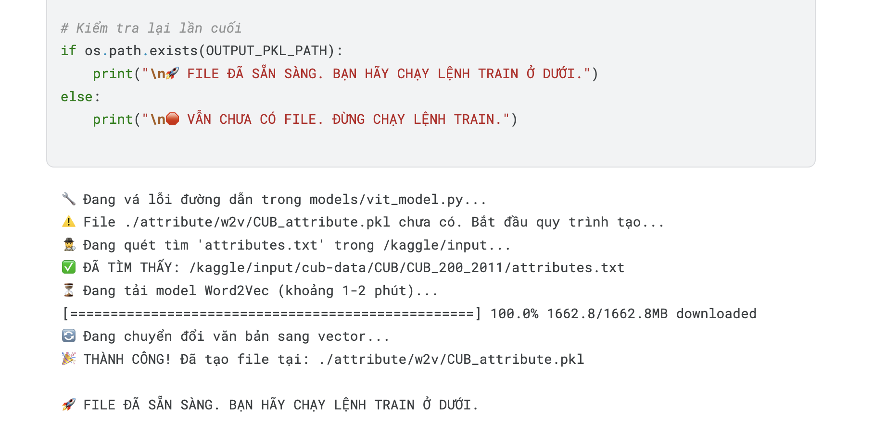
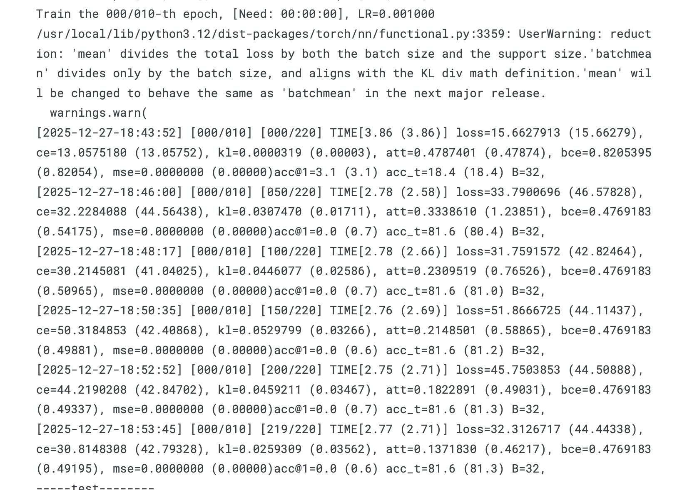
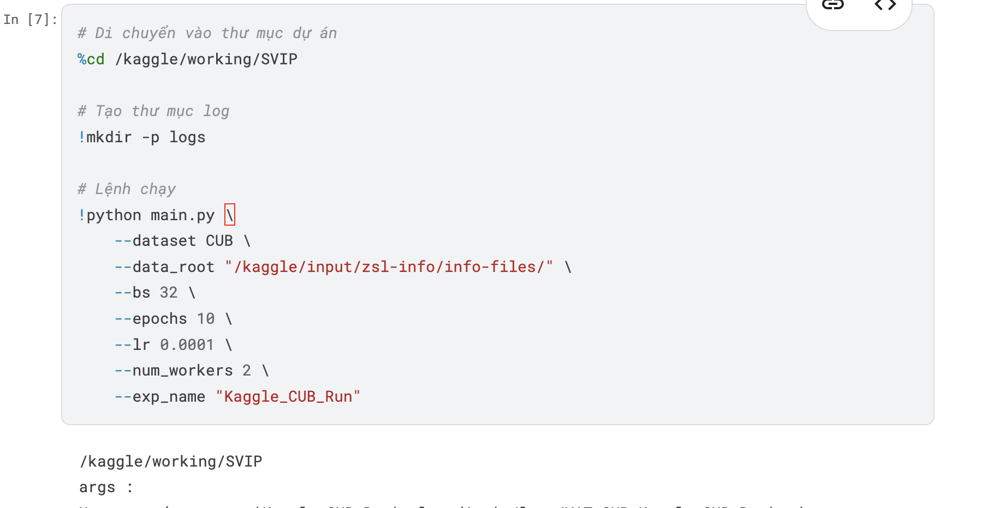

Xử lý dữ liệu lớn bằng kỹ thuật ngữ cảnh hóa
Mô hình SVIP được triển khai trên nền tảng Kaggle Notebook. Các thư viện cần thiết được kiểm tra và cài đặt tự động.
Hệ thống kiểm tra file đặc trưng ngữ nghĩa. Nếu chưa tồn tại, mô hình Word2Vec sẽ được tải và sử dụng để chuyển đổi thuộc tính văn bản sang vector.
CUB_attribute.pkl từ thuộc tính văn bản.
Mô hình được huấn luyện với batch size 32, learning rate 0.0001 trong 10 epoch. Các chỉ số loss và accuracy được ghi nhận theo từng batch.
Lệnh thực thi được cấu hình với tập dữ liệu CUB, số epoch, batch size và tên experiment cụ thể.
